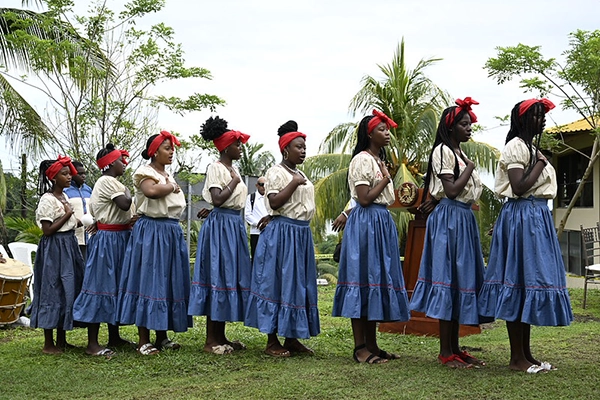
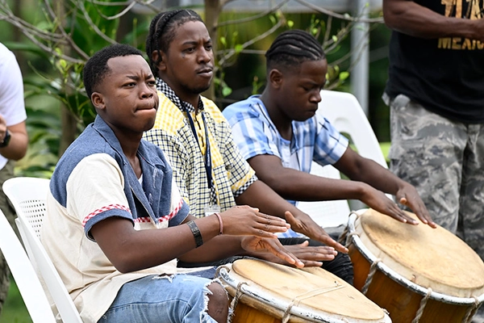
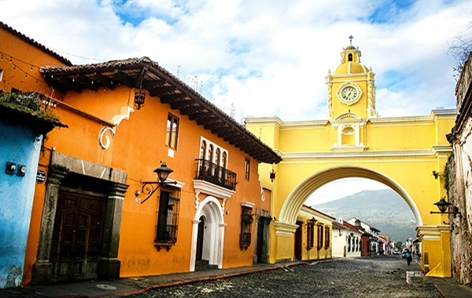

Garifuna

The Garífuna people are an Afro-Indigenous community whose culture developed through a mixture of African, Indigenous Caribbean, and European influences. Their ancestors arrived along the Caribbean coast of Central America in the eighteenth century.

In Guatemala, Garífuna communities are primarily located in coastal towns such as Livingston. Music, dance, and storytelling are central elements of Garífuna cultural life. Traditional drumming rhythms and spiritual ceremonies remain important expressions of identity.
Garífuna culture represents a unique cultural tradition within Guatemala and contributes to the diversity of the nation’s coastal regions.

Xinca
One of Guatemala's most ancient and least known peoples, the Xinka have called the southeastern highlands home for centuries. Learn about their unique language, their fight for recognition, and their journey to preserve what remains.

About
Behind every website is a story. Learn about the person who created this project, the inspiration behind it, and the sources that brought these cultural stories to life.

Ladinos
Born from the meeting of two worlds, the Ladino identity shaped modern Guatemala, its cities, politics, and culture. Discover the community at the center of the nation's history.

Maya
Builders of pyramids, keepers of ancient calendars, weavers of vibrant textiles, the Maya are Guatemala's largest Indigenous people and one of the world's greatest civilizations. Explore a culture that has survived for thousands of years.